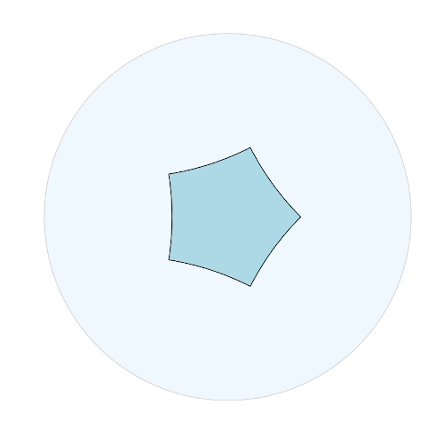
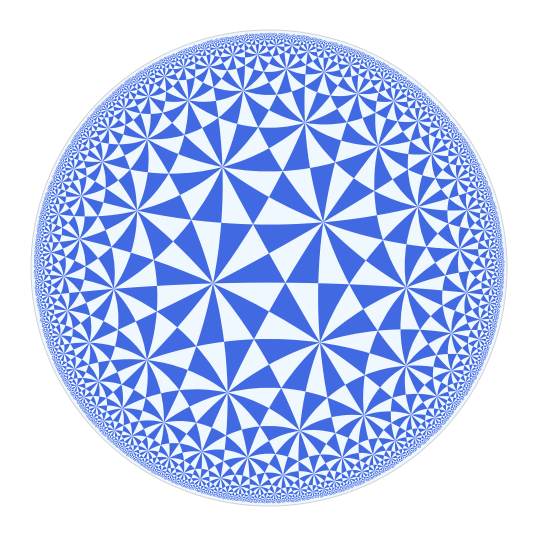
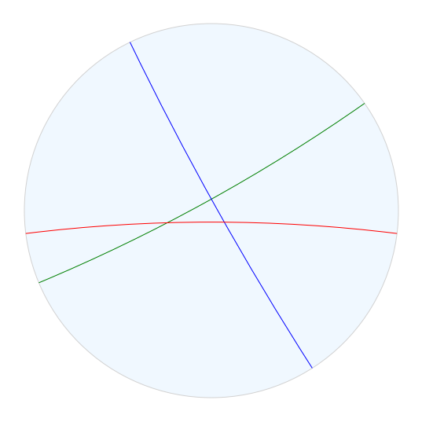
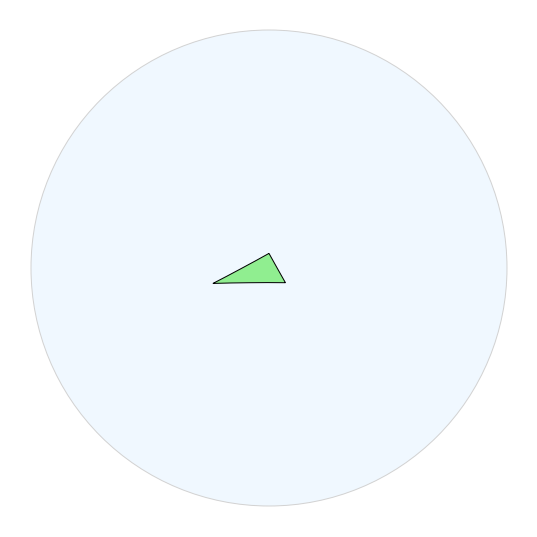
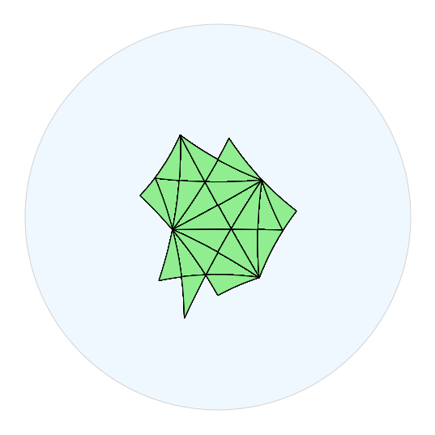

Package geometry_tools
geometry_tools is a Python package meant to help you work with and visualize group actions on hyperbolic space and projective space.
The package is mostly built on top of numpy, matplotlib, and scipy and provides modules to:
-
perform numerical computations with objects in hyperbolic space, in multiple models (namely the Klein, hyperboloid, projective, Poincare, and half-space models)
-
work (again, numerically) with representations of finitely generated groups into \textrm{O}(d, 1), \textrm{GL}(d, \mathbb{R}), and \textrm{GL}(d, \mathbb{C})
-
use finite-state automata to do some simple computations in word-hyperbolic groups
-
draw nice pictures in the hyperbolic plane, the real projective plane, and the complex projective line
None of the functionality of this package is (mathematically) very deep. Mostly, the package just wraps more sophisticated tools in a way intended to make it easy to quickly draw good pictures in \mathbb{H}^2, \mathbb {H}^3, and \mathbb{R}P^2 and \mathbb{C}P^1.
A quick example
To draw a picture of a right-angled pentagon in the hyperbolic plane:
from geometry_tools import hyperbolic, drawtools
from numpy import pi
# make a right-angled pentagon
pentagon = hyperbolic.regular_polygon(5, angle=pi/2)
# draw the pentagon
figure = drawtools.HyperbolicDrawing()
figure.draw_plane()
figure.draw_polygon(pentagon, facecolor="lightblue")
figure.show()
This code produces:

Installation
Right now, the easiest way to install geometry_tools is to download or clone the project from the git repository, and run
pip install .
from the directory where you've downloaded it. If you don't have pip installed, you should install pip first. Alternatively, you can try running python setup.py install from the project directory (this is not recommended).
Drawing hyperbolic group actions
The geometry_tools package is handy for drawing pictures of tilings in \mathbb{H}^2. Here we will work with visualizing a (2,3,7) triangular tiling:

You can also download this example as a Jupyter notebook or a python file.
To get started, first instantiate the TriangleGroup class to get a (2,3,7) triangle group, and compute its geometric representation into the isometries of the hyperbolic plane:
# get a representation for a triangle group.
# (these are built in to the program)
from geometry_tools import hyperbolic, coxeter, drawtools
triangle_rep = coxeter.TriangleGroup((2,3,7)).hyperbolic_rep()
We can draw the reflection walls for the group using the geometry_tools.drawtools subpackage:
# find the fixed points at infinity for the generating reflections
reflections = triangle_rep.isometries(["a", "b", "c"])
walls = hyperbolic.Geodesic.from_reflection(reflections)
wall_a, wall_b, wall_c = walls
fig = drawtools.HyperbolicDrawing(model="poincare")
fig.draw_plane()
fig.draw_geodesic(wall_a, color="green")
fig.draw_geodesic(wall_b, color="blue")
fig.draw_geodesic(wall_c, color="red")

We can find a fundamental domain for the triangle group by taking the triangle whose vertices are the fixed points of length-2 elements of the group.
triangle_vertices = triangle_rep.isometries(["ab", "bc", "ac"]).fixed_point()
fund_triangle = hyperbolic.Polygon(triangle_vertices)
fig = drawtools.HyperbolicDrawing(model="poincare")
fig.draw_plane()
fig.draw_polygon(fund_triangle, facecolor="lightgreen")

If we want to start visualizing the tiling of \mathbb{H}^2 we get from this triangle group, we can start drawing translates of this fundamental domain. The easy (but less efficient and appealing) way to do this is to just draw copies of the fundamental domain translated by the images of freely reduced words in the group.
words = triangle_rep.free_words_less_than(5)
isometries = triangle_rep.isometries(words)
tiles = isometries @ fund_triangle
fig = drawtools.HyperbolicDrawing(model="poincare")
fig.draw_plane()
fig.draw_polygon(tiles, facecolor="lightgreen")

Speeding things up with finite-state automata
Drawing copies of the triangle translated by images of all freely reduced words is a little slow. And, we end up drawing the same triangle on top of itself many times. We can speed up the process by picking a unique word for each element of the group, using a finite-state automaton.
The geometry_tools.automata subpackage provides a handful of tools for working with finite-state automata. It can load and manipulate the automata generated by the kbmag program. While kbmag is not included with geometry_tools, the package does provide precomputed automata for a number of word-hyperbolic groups. To get the list of precomputed automata, import the geometry_tools.automata.fsa submodule and call fsa.list_builtins(). Call fsa.load_builtin() to load an automaton.
Thanks to code provided by Florian Stecker, the geometry_tools package can also generate automata for any Coxeter group. So we can get an automaton for the (2,3,7) triangle group like so:
# construct the (2,3,7) automaton
triangle_fsa = coxeter.TriangleGroup((2,3,7)).automaton()
# get a unique word for each group element of length < 25.
# (we convert to a list since enumerate_words returns a generator)
words = list(triangle_fsa.enumerate_words(30))
free_words = list(triangle_rep.free_words_less_than(9))
# compare unique words of length <30 to freely reduced words of length <9.
# when we don't consider the relation, we get many redundant words!
len(words), len(free_words)
(5951, 585937)
To draw a nice picture, we can filter out all the words of odd length so that for our triangle reflection group, we only consider orientation-preserving isometries.
even_words = [word for word in words if len(word) % 2 == 0]
pos_isometries = triangle_rep.isometries(even_words)
tiles = pos_isometries @ fund_triangle
fig = drawtools.HyperbolicDrawing()
fig.draw_plane()
fig.draw_polygon(tiles, facecolor="royalblue", edgecolor="none")
To recap, here's all the code we need to produce the above picture:
from geometry_tools import hyperbolic, coxeter, drawtools
from geometry_tools.automata import fsa
# make the triangle group representation and load a finite-state automaton
triangle_group = coxeter.TriangleGroup((2,3,7))
triangle_rep = triangle_group.hyperbolic_rep()
triangle_fsa = triangle_group.automaton()
# find a fundamental domain for the action by finding
# fixed points of length-2 elements
vertices = triangle_rep.isometries(["ab", "bc", "ca"]).fixed_point()
fund_triangle = hyperbolic.Polygon(vertices)
# find all orientation-preserving isometries of length at most 30
words = triangle_fsa.enumerate_words(30)
even_words = [word for word in words if len(word) % 2 == 0]
pos_isometries = triangle_rep.isometries(even_words)
# draw the translated triangles
fig = drawtools.HyperbolicDrawing(model="poincare")
fig.draw_plane()
fig.draw_polygon(pos_isometries @ fund_triangle,
facecolor="royalblue", edgecolor="none")
fig.show()
Expand source code
r"""
`geometry_tools` is a Python package meant to help you work with and visualize group actions on hyperbolic space and projective space.
The package is mostly built on top of [numpy](https://numpy.org/), [matplotlib](https://matplotlib.org/), and [scipy](https://scipy.org/) and provides modules to:
- perform numerical computations with objects in hyperbolic space, in multiple models (namely the Klein, hyperboloid, projective, Poincare, and half-space models)
- work (again, numerically) with representations of finitely generated groups into \(\textrm{O}(d, 1)\), \(\textrm{GL}(d, \mathbb{R})\), and \(\textrm{GL}(d, \mathbb{C})\)
- use finite-state automata to do some simple computations in word-hyperbolic groups
- draw nice pictures in the hyperbolic plane, the real projective plane, and the complex projective line
None of the functionality of this package is (mathematically) very deep.
Mostly, the package just wraps more sophisticated tools in a way intended to
make it easy to quickly draw good pictures in \(\mathbb{H}^2\), \(\mathbb
{H}^3\), and \(\mathbb{R}P^2\) and \(\mathbb{C}P^1\).
## A quick example
To draw a picture of a right-angled pentagon in the hyperbolic plane:
```python
from geometry_tools import hyperbolic, drawtools
from numpy import pi
# make a right-angled pentagon
pentagon = hyperbolic.regular_polygon(5, angle=pi/2)
# draw the pentagon
figure = drawtools.HyperbolicDrawing()
figure.draw_plane()
figure.draw_polygon(pentagon, facecolor="lightblue")
figure.show()
```
This code produces:

# Installation
Right now, the easiest way to install `geometry_tools` is to download or clone the project from the [git repository](https://github.com/tjweisman/geometry_tools), and run
```shell
pip install .
```
from the directory where you've downloaded it. If you don't have pip installed, you should [install pip](https://pip.pypa.io/en/stable/) first. Alternatively, you can try running `python setup.py install` from the project directory (this is not recommended).
# Drawing hyperbolic group actions
The `geometry_tools` package is handy for drawing pictures of tilings in \(\mathbb{H}^2\). Here we will work with visualizing a (2,3,7) triangular tiling:

You can also [download this example as a Jupyter notebook](examples/triangular_tiling.ipynb) or a [python file](examples/triangular_tiling.py).
To get started, first instantiate the `coxeter.TriangleGroup` class to get a (2,3,7) triangle group, and compute its geometric representation into the isometries of the hyperbolic plane:
```python
# get a representation for a triangle group.
# (these are built in to the program)
from geometry_tools import hyperbolic, coxeter, drawtools
triangle_rep = coxeter.TriangleGroup((2,3,7)).hyperbolic_rep()
```
We can draw the reflection walls for the group using the `drawtools` subpackage:
```python
# find the fixed points at infinity for the generating reflections
reflections = triangle_rep.isometries(["a", "b", "c"])
walls = hyperbolic.Geodesic.from_reflection(reflections)
wall_a, wall_b, wall_c = walls
fig = drawtools.HyperbolicDrawing(model="poincare")
fig.draw_plane()
fig.draw_geodesic(wall_a, color="green")
fig.draw_geodesic(wall_b, color="blue")
fig.draw_geodesic(wall_c, color="red")
```

We can find a fundamental domain for the triangle group by taking the triangle whose vertices are the fixed points of length-2 elements of the group.
```python
triangle_vertices = triangle_rep.isometries(["ab", "bc", "ac"]).fixed_point()
fund_triangle = hyperbolic.Polygon(triangle_vertices)
fig = drawtools.HyperbolicDrawing(model="poincare")
fig.draw_plane()
fig.draw_polygon(fund_triangle, facecolor="lightgreen")
```

If we want to start visualizing the tiling of \(\mathbb{H}^2\) we get from this triangle group, we can start drawing translates of this fundamental domain. The easy (but less efficient and appealing) way to do this is to just draw copies of the fundamental domain translated by the images of freely reduced words in the group.
```python
words = triangle_rep.free_words_less_than(5)
isometries = triangle_rep.isometries(words)
tiles = isometries @ fund_triangle
fig = drawtools.HyperbolicDrawing(model="poincare")
fig.draw_plane()
fig.draw_polygon(tiles, facecolor="lightgreen")
```

### Speeding things up with finite-state automata
Drawing copies of the triangle translated by images of all freely reduced words is a little slow. And, we end up drawing the same triangle on top of itself many times. We can speed up the process by picking a *unique* word for each element of the group, using a *finite-state automaton.*
The `geometry_tools.automata` subpackage provides a handful of tools for working with finite-state automata. It can load and manipulate the automata generated by the [kbmag](https://gap-packages.github.io/kbmag/) program. While `kbmag` is not included with `geometry_tools`, the package does provide precomputed automata for a number of word-hyperbolic groups. To get the list of precomputed automata, import the `automata.fsa` submodule and call `fsa.list_builtins()`. Call `fsa.load_builtin()` to load an automaton.
Thanks to code provided by [Florian Stecker](https://florianstecker.de/), the `geometry_tools` package can also generate automata for any Coxeter group. So we can get an automaton for the (2,3,7) triangle group like so:
```python
# construct the (2,3,7) automaton
triangle_fsa = coxeter.TriangleGroup((2,3,7)).automaton()
# get a unique word for each group element of length < 25.
# (we convert to a list since enumerate_words returns a generator)
words = list(triangle_fsa.enumerate_words(30))
free_words = list(triangle_rep.free_words_less_than(9))
# compare unique words of length <30 to freely reduced words of length <9.
# when we don't consider the relation, we get many redundant words!
len(words), len(free_words)
```
(5951, 585937)
To draw a nice picture, we can filter out all the words of odd length so that for our triangle reflection group, we only consider orientation-preserving isometries.
```python
even_words = [word for word in words if len(word) % 2 == 0]
pos_isometries = triangle_rep.isometries(even_words)
tiles = pos_isometries @ fund_triangle
fig = drawtools.HyperbolicDrawing()
fig.draw_plane()
fig.draw_polygon(tiles, facecolor="royalblue", edgecolor="none")
```

To recap, here's all the code we need to produce the above picture:
```python
from geometry_tools import hyperbolic, coxeter, drawtools
from geometry_tools.automata import fsa
# make the triangle group representation and load a finite-state automaton
triangle_group = coxeter.TriangleGroup((2,3,7))
triangle_rep = triangle_group.hyperbolic_rep()
triangle_fsa = triangle_group.automaton()
# find a fundamental domain for the action by finding
# fixed points of length-2 elements
vertices = triangle_rep.isometries(["ab", "bc", "ca"]).fixed_point()
fund_triangle = hyperbolic.Polygon(vertices)
# find all orientation-preserving isometries of length at most 30
words = triangle_fsa.enumerate_words(30)
even_words = [word for word in words if len(word) % 2 == 0]
pos_isometries = triangle_rep.isometries(even_words)
# draw the translated triangles
fig = drawtools.HyperbolicDrawing(model="poincare")
fig.draw_plane()
fig.draw_polygon(pos_isometries @ fund_triangle,
facecolor="royalblue", edgecolor="none")
fig.show()
```
"""Sub-modules
geometry_tools.automata-
Work with finite-state automata …
geometry_tools.complex_projective-
Work with objects in CP^1, the complex projective line, in numerical coordinates.
geometry_tools.coxeter-
Work with Coxeter groups and their representations.
geometry_tools.drawtools-
This submodule provides an interface between the
geometry_tools.projectiveandgeometry_tools.hyperbolicsubmodules and … geometry_tools.hyperbolic-
Model objects in hyperbolic space with numerical coordinates …
geometry_tools.projective-
Work with projective space in numerical coordinates.
geometry_tools.representation-
Work with group representations into finite-dimensional vector spaces, using numerical matrices …
geometry_tools.utils-
Provide utility functions used by the various geometry tools in this package.